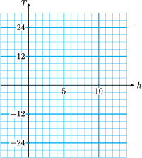

Section 2.6 Chapter 2 Summary and Review
Subsection Lesson 2.1 Signed Numbers
- The natural numbers, zero, and the negatives of the natural numbers are called the integers.
-
We use special symbols to indicate order:
\begin{equation*} \begin{aligned} \blert{\lt} \amp ~~~~ \text{means}~~~~ \blert{\text{is less than}}\\ \blert{\gt} \amp ~~~~ \text{means}~~~~ \blert{\text{is greater than}} \end{aligned} \end{equation*} - The absolute value of a number is the unsigned part of the number. It is never negative.
Rules for Adding Integers.
- To add two numbers with the same sign, add their absolute values. The sum has the same sign as the numbers.
- To add two numbers with opposite signs, subtract their absolute values. The sum has the same sign as the number with the larger absolute value.
Rules for Subtracting Integers.
To subtract \(b\) from \(a\text{:}\)
- Change the sign of \(b\text{.}\)
- Change the subtraction to addition.
- Proceed as in addition.
Products and Quotients of Signed Numbers.
- The product or quotient of two numbers with opposite signs is a negative number.
- The product or quotient of two numbers with the same sign is a positive number.
Quotients Involving Zero.
If \(a\) is any nonzero number, then
\begin{equation*} \blert{\dfrac{0}{a} = 0}~~~~~~\text{and}~~~~~~ \blert{\dfrac{a}{0} ~~ \text{is undefined.}} \end{equation*}
Subsection Section 2.2 Expressions and Equations
- When we evaluate an algebraic expression, we follow the order of operations.
- When we evaluate an algebraic expression at a negative number, we enclose the negative numbers in parentheses.
Subsection Section 2.3 Graphs of Linear Equations
- An equation of the form \(y=ax+b\text{,}\) where \(a\) and \(b\) are constants, is called a linear equation because its graph is a straight line.
- We can graph a linear equation by evaluating the expression \(ax+b\) at several values of \(x\) and then plotting points.
- We use a Cartesian coordinate system to make a graph that includes negative values of the variables.
- The graph of an equation is a picture of the solutions of the equation. Each point on the graph represents a solution.
Subsection Section 2.4 Linear Equations and Inequalities
- To solve an equation that involves two or more operations, we undo those operations in reverse order.
- A statement that uses one of the symbols or is called an inequality.
Rules for Solving Inequalities.
- We can add or subtract the same quantity on both sides.
- We can multiply or divide both sides by the same positive number.
- If we multiply or divide both sides by a negative number, we must reverse the direction of the inequality.
- Each point on the graph of an equation represents a solution of the equation. To solve the equation for a particular \(y\)-value, we locate the corresponding point on the graph.
- To solve a compound inequality, we perform the steps needed to isolate \(x\) on all three sides of the inequality.
Subsection Section 2.5 Like Terms
- Two algebraic expressions are equivalent if they name the same number for all values of the variable.
- Like terms are any terms that are exactly alike in their variable factors. By adding or subtracting like terms we can replace one algebraic expression by a shorter or simpler one.
- The numerical factor in a term is called the numerical coefficient, or just the coefficient of the term.
- Replacing an expression by a simpler equivalent one is called simplifying the expression.
To add or subtract like terms.
Add or subtract the numerical coefficients of the terms. Do not change the variable factors of the terms.
Removing parentheses.
- Parentheses following a plus sign may be omitted; each term within parentheses keeps its original sign.
- To remove parentheses that follow a minus sign, we change the sign of each term within parentheses and then omit the parentheses and the minus sign.
Steps for Solving Linear Equations.
- Combine like terms on each side of the equation.
- By adding or subtracting the same quantity on both sides of the equation, get all the variable terms on one side and all the constant terms on the other.
- Divide both sides by the coefficient of the variable to obtain an equation of the form \(x=a\text{.}\)
Subsection Review Questions
Use complete sentences to answer the questions.
- Explain the terms natural numbers, whole numbers, and integers.
- A classmate claims that the opposite of a number and the absolute value of a number are the same, and uses \(x=-3\) as an example. Do you agree? Give examples of your own.
-
You have probably heard people say that "two negatives make a positive." For which of the four arithmetic operations is this statement
- always true?
- always false?
- sometimes true and sometimes false?
Make up an example for each case.
- In a Cartesian coordinate system, the axes divide the plane into four . The point \((0,0)\) is called the .
- Explain how to add or subtract like terms.
- What is wrong with this statement? \(8x-(2x-3)=6x-3)\)
- When solving an inequality, we must remember to if we both sides by .
- Explain how to use a graph to solve an equation.
- Give an example of a quotient that is undefined.
- Explain why \(-\dfrac{a}{b}\) is not equal to \(\dfrac{-a}{-b}\text{.}\)
Exercises Review Problems
For Problems 1–6, choose the appropriate equation.
- \(\displaystyle 5x-8=30\)
- \(\displaystyle \dfrac{x}{5}-30=8\)
- \(\displaystyle \dfrac{x-30}{5}=8\)
- \(\displaystyle 5x+8=30\)
- \(\displaystyle \dfrac{x}{5}-8=30\)
- \(\displaystyle \dfrac{x+30}{5}=8\)
1.
Ilciar has earned a total of 30 points on the first four quizzes in his biology class. What must he earn on the fifth quiz to end up with an average of 8?
2.
Jocelyn ordered five exotic plants from a nursery. She paid a total of $30, including an $8 shipping fee. How much did she pay for each plant?
3.
The five members of the chess team pitched in to buy new equipment. They used $30 from their treasury, and each member donated $8. How much did the new equipment cost?
4.
Hemman bought 5 tapes on sale, and he cashed in a gift certificate for $8. He then owed the clerk $30. How much was each tape?
5.
Nirusha and four other people won the office baseball pool. After spending $30 of her share, Nirusha had $8 left. What was the total amount in the pool?
6.
One-fifth of the members at Sportslife Health Club signed up for a yoga class. Eight of them dropped out, leaving 30 in the class. How many members are in the Club?
For Problems 7–10, solve.
7.
\(3x-4=1\)
8.
\(1.2+0.4z=3.2\)
9.
\(\dfrac{7v}{8}-3=4\)
10.
\(13=\dfrac{2}{7}x+13\)
For Problems 11–12, write an equation relating the variables, make a table of values, and graph your equation on the grid provided.
11.
A new computer station for a graphics design firm costs $2000 and depreciates in value $200 every year. Write and graph an equation that gives the value, \(V\text{,}\) of the station after \(t\) years. Use the grid below.

12.
Ranwa teaches aerobic dance. Her gym pays her $5 for an hour-long class, plus $2 for each paying student in the class. Write and graph an equation that gives Ranwa's pay, \(P\text{,}\) if there are \(s\) students in the class. Use the grid below.
For Problems 13–14, write and solve an equation to answer the question.
13.
Customers at Sunny Orchard can pick their own fruit. There is a $5.75 entrance fee, and the fruit costs $4.50 a bushel. Bahn spent $19.25 at the orchard. How many bushels of fruit did he pick?
14.
The perimeter of a rectangle is the sum of twice its width and twice its length. If 150 meters of fence enclose a rectangular yard of length 45 meters, what is the width of the yard?
15.
If \(x=-3\text{,}\) evaluate each expression.
- \(\displaystyle -x\)
- \(\displaystyle x-3\)
- \(\displaystyle 3-x\)
- \(\displaystyle -(-x)\)
16.
Graph each set of numbers on a separate number line.
- \(\displaystyle 1.4,~2\dfrac{1}{2},~-2\dfrac{1}{3},~-3.5\)
- \(\displaystyle -15,~-5,~10,~25\)
For Problems 17–20, replace the comma by the proper symbol; \(~\gt~,~\lt~,\) or \(~=\text{.}\)
17.
\(-2,~{-3}\)
18.
\(-2.02,~{-2.1}\)
19.
\(-2-(-5),~{-7}\)
20.
\(-6(\dfrac{-1}{3}),~{-2}\)
For Problems 21–28, simplify.
21.
\(28-14-9+15\)
22.
\(11-14+(-24)-(-18)\)
23.
\(12-[6-(-2)-5]\)
24.
\(-2+[-3-(-14)+6]\)
25.
\(5-(-4)3-7(-2)\)
26.
\(5-(-4)(3-7)(-2)\)
27.
\(\dfrac{6(-3)-8}{-4(-3-5)}\)
28.
\(\dfrac{6(-2)-8(-9)}{5(2-7)}\)
For Problems 29–32, evaluate.
29.
\(2-ab-3a,~~\)for \(~~a=-5,~b=-4\)
30.
\((8-6xy)xy,~~\)for \(~~x=-2,~y=2\)
31.
\(\dfrac{-3-y}{4-x},~~\)for \(~~x=-1,~y=2\)
32.
\(\dfrac{5}{9}(F-32)+273,~~\)for \(~~F=-22\)
33.
If the overnight low in Lone Pine was \(-4 \degree\)F, what was the temperature after it had warmed by \(10 \degree\)F?
34.
The winter temperature in the city is typically \(3 \degree\)F warmer than in the adjoining suburb. If the temperature in the suburb is \(-7 \degree\)F, what is the temperature in the city?
35.
Jordan's clothing company is worth 280,000 dollars and Asher's is worth 180,000 dollars. How much more is Jordan's company worth than Asher's?
36.
A certain arsenic compound has a melting point of \(-8.5 \degree\)F. If the melting point is reduced by \(1.1 \degree\)F, what is the new melting point?
37.
In his first football game, Bo rushes for three consecutive losses of 4 yards each. What is his total net yardage for the three plays?
38.
In testing a military aircraft's handling at low altitude, the pilot runs a series of flights over a set course, each at an altitude 150 feet lower than the previous flight. What is the net change in altitude between the first and the sixth flights?
For Problems 39–42, find three solutions for the inequality.
39.
\(x-2 \lt 5\)
40.
\(4x \ge -12\)
41.
\(-9 \le -3x\)
42.
\(-15 \gt 5+x\)
43.
The temperature in Maple Grove was \(18 \degree\)F at noon, and it has been dropping ever since at a rate of \(3 \degree\)F per hour.
-
Fill in the table. \(T\) stands for the temperature \(h\) hours after noon. Negative values of \(h\) represent hours before noon.
\(h\) \(-4\) \(-2\) \(0\) \(1\) \(3\) \(5\) \(8\) \(T\) \(\hphantom{0000}\) \(\hphantom{0000}\) \(\hphantom{0000}\) \(\hphantom{0000}\) \(\hphantom{0000}\) \(\hphantom{0000}\) \(\hphantom{0000}\) - Write an equation for the temperature, \(T\text{,}\) after \(h\) hours.
-
Graph your equation on the grid.
 - What was the temperature at 10 am?
- When will the temperature reach \(-15 \degree\text{?}\)
- How much did the temperature drop between 3 pm and 9 pm?
44.
Graph each pair of points on the grid, then find the distance between them.
- \(A(-2,-4)\) and \(B(-7,-4)\)
- \(P(6,-2)\) and \(Q(6,8)\)

For Problems 45–46, make a table of values and graph each equation.
45.
\(y=-2x+7\)
46.
\(y=\dfrac{4}{3}x-2\)
For Problems 47–48, simplify the expression.
47.
\((4m+2n)-(2m-5n)\)
48.
\((-5c-6)+(-11c+15)\)
For Problems 49–54, solve.
49.
\(4z-6=-10\)
50.
\(3-5x=-17\)
51.
\(-1=\dfrac{5w}{3}+4\)
52.
\(4-\dfrac{2z}{5}=8\)
53.
\(3h-2=5h+10\)
54.
\(7-9w=w+7\)
For Problems 55–56, use the graph to solve the equation. Estimate your solutions if necessary.
55.
- \(\displaystyle -3x+9=24\)
- \(\displaystyle -3x+9=3\)
56.
- \(\displaystyle 24x-1800=-1250\)
- \(\displaystyle 24x-1800=500\)
57.
The length of a rectangle is 3 times its width.
- If the width of a rectangle is \(x\text{,}\) what is its length?
- Express the perimeter of the rectangle in terms of \(x\text{.}\)
- Suppose the perimeter of the rectangle is 48 centimeters. Find the dimensions of the rectangle.
58.
In a city council election the winner received 132 votes more than her opponent.
- If the winner received \(y\) votes, how many did her opponent receive?
- Write an expression for the total number of votes cast for the two candidates.
- If 12,822 votes were cast, how many did each candidate receive?
For Problems 59–64, For Problems 59-64, solve the inequality algebraically, and graph the solutions on a number line.
59.
\(2-3x \le -7\)
60.
\(\dfrac{t}{-3}-1.7 \gt 2.8\)
61.
\(3k-13 \lt 5+6k\)
62.
\(12a-28 \lt -18+2a\)
63.
\(-9 \lt 5-2n \le -1\)
64.
\(15 \ge -6+3m \ge -6\)